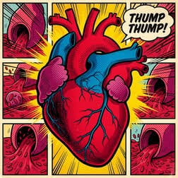
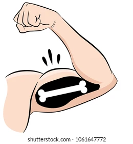
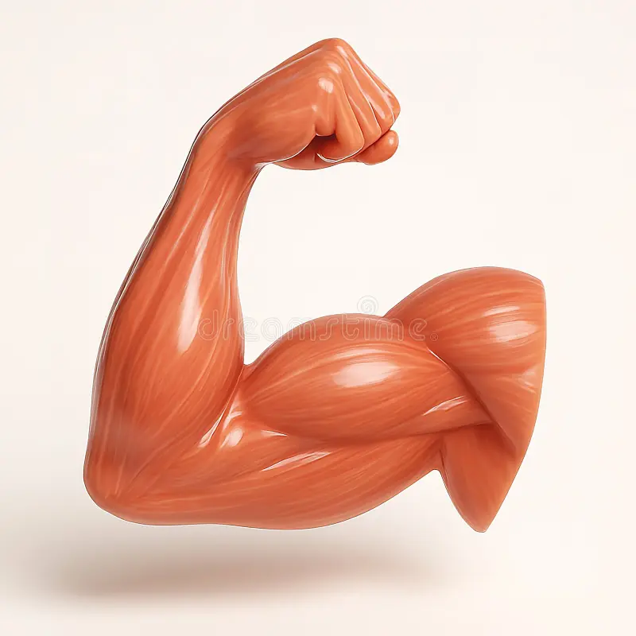
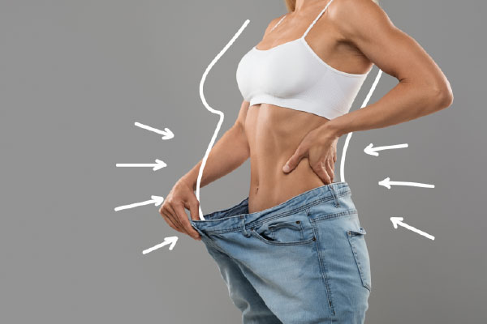

Un corazón fortalecido por el ejercicio es un músculo más eficiente: bombea un mayor volumen de sangre con cada latido, reduciendo la frecuencia cardíaca en reposo y la presión arterial. Esto ayuda a reducir significativamente la fatiga diaria, permitiéndote realizar actividades cotidianas o prolongadas sin cansarte rápidamente. Además, mejora el transporte de oxígeno y nutrientes a todos los tejidos, acelerando la recuperación física tras el esfuerzo.

Tener una mayor densidad mineral ósea ayuda a prevenir la osteopenia y la osteoporosis, así como a reducir drásticamente el riesgo de fracturas o fisuras ante caídas y golpes. Para el día a día, huesos más densos proporcionan una estructura de soporte sólida para el cuerpo, garantizando una vejez más autónoma y funcional.

La flexibilidad en los músculos ayuda a mantener un rango completo de movimiento en las articulaciones, lo que previene contracturas, tirones y rigidez. También ayuda a mantener una postura corporal correcta, aliviando tensiones acumuladas en la zona lumbar y el cuello, y disminuye el riesgo de lesiones durante movimientos bruscos.

Mantener un peso corporal adecuado ayuda a reducir la sobrecarga y el desgaste mecánico sobre las articulaciones (especialmente rodillas, caderas y columna vertebral). Asimismo, ayuda a prevenir el desarrollo de condiciones metabólicas como la diabetes tipo 2, hígado graso y niveles elevados de colesterol, favoreciendo un metabolismo equilibrado y constante.

La Organización Mundial de la Salud (OMS) recomienda al menos 60 minutos diarios de actividad física moderada o intensa para niños y adolescentes.